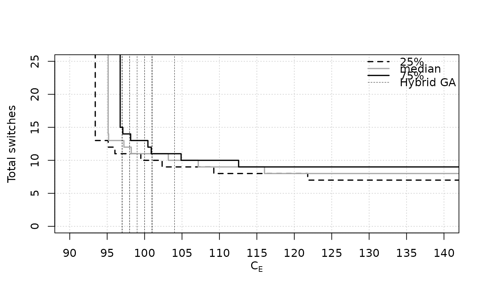
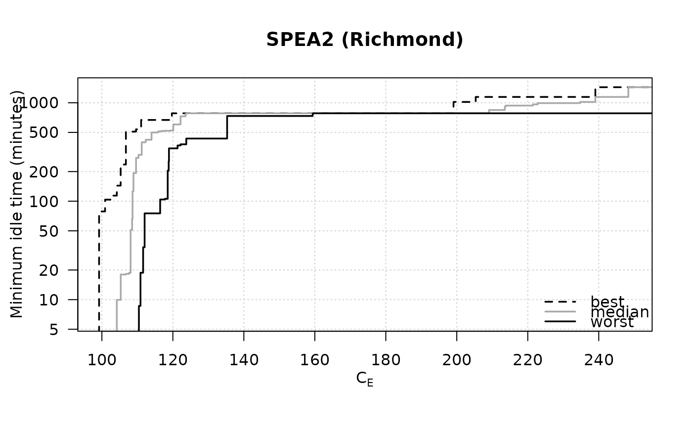

Plot the Empirical Attainment Function for two objectives generic
Source:R/calls.R, R/eaf.R
eafplot.RdComputes and plots the Empirical Attainment Function, either as attainment surfaces for certain percentiles or as points.
eafplot(x, ...) # S3 method for formula eafplot(formula, data, groups = NULL, subset = NULL, ...) # S3 method for list eafplot(x, ...) # S3 method for data.frame eafplot(x, y = NULL, sets = NULL, ...) # S3 method for default eafplot(x, sets = NULL, groups = NULL, percentiles = c(0, 50, 100), attsurfs = NULL, xlab = NULL, ylab = NULL, xlim = NULL, ylim = NULL, log = "", type = "point", col = NULL, lty = c("dashed", "solid", "solid", "solid", "dashed"), lwd = 1.75, pch = NA, cex.pch = par("cex"), las = par("las"), legend.pos = "topright", legend.txt = NULL, extra.points = NULL, extra.legend = NULL, extra.pch = 4:25, extra.lwd = 0.5, extra.lty = NA, extra.col = "black", maximise = c(FALSE, FALSE), xaxis.side = "below", yaxis.side = "left", axes = TRUE, sci.notation = FALSE, ...)
Arguments
| x | Either a matrix of data values, or a data frame, or a list of data frames of exactly three columns. |
|---|---|
| ... | Other graphical parameters to |
| formula | A formula of the type: |
| data | Dataframe containing the fields mentioned in the formula and in groups. |
| groups | This may be used to plot profiles of different algorithms on the same plot. |
| subset | A vector indicating which rows of the data should be used. If left to default |
| y | Either a matrix of data values, or a data frame. |
| sets | Vector indicating which set each point belongs to. |
| percentiles | Vector indicating which percentile should be plot. The default is to plot only the median attainment curve. |
| attsurfs | TODO |
| xlab, ylab, xlim, ylim, log, col, lty, lwd, pch, cex.pch, las | Graphical
parameters, see |
| type | string giving the type of plot desired. The following values are possible, points and area. |
| legend.pos | the position of the legend, see |
| legend.txt | a character or expression vector to appear in the
legend. If |
| extra.points | A list of matrices or data.frames with
two-columns. Each element of the list defines a set of points, or
lines if one of the columns is |
| extra.legend | A character vector providing labels for the groups of points. |
| extra.pch, extra.lwd, extra.lty, extra.col | Control the graphical aspect
of the points. See |
| maximise | Whether the first and/or second objective correspond to a maximisation problem. |
| xaxis.side | On which side that xaxis is drawn. Valid values are
"below" and "above". See |
| yaxis.side | On which side that yaxis is drawn. Valid values are "left"
and "right". See |
| axes | A logical value indicating whether both axes should be drawn on the plot. |
| sci.notation | Generate prettier labels |
Value
No value is returned.
Details
This function can be used to plot random sets of points like those obtained by different runs of biobjective stochastic optimization algorithms. An EAF curve represents the boundary separating points that are known to be attainable (that is, dominated in Pareto sense) in at least a fraction (quantile) of the runs from those that are not. The median EAF represents the curve where the fraction of attainable points is 50%. In single objective optimization the function can be used to plot the profile of solution quality over time of a collection of runs of a stochastic optimizer.
Methods (by class)
formula: Formula interfacelist: List interface for lists of data.framesdata.frame: Data.frame interfacedefault: Main function
See also
Examples
data(gcp2x2) tabucol <- subset(gcp2x2, alg != "TSinN1") tabucol$alg <- tabucol$alg[drop=TRUE] eafplot(time + best ~ run, data = tabucol, subset = tabucol$inst=="DSJC500.5")# These take time eafplot(time + best ~ run | inst, groups=alg, data=gcp2x2)eafplot(time + best ~ run | inst, groups=alg, data=gcp2x2, percentiles=c(0,50,100), cex = 1.4, lty = c(2,1,2), lwd = c(2,2,2), col = c("black","blue","grey50"))A1 <- read_datasets(file.path(system.file(package = "eaf"), "extdata", "ALG_1_dat")) A2 <- read_datasets(file.path(system.file(package = "eaf"), "extdata", "ALG_2_dat")) eafplot(A1, percentiles = 50, sci.notation = TRUE)## Save as a PDF file. # dev.copy2pdf(file = "eaf.pdf", onefile = TRUE, width = 5, height = 4) ## Using extra.points # \dontrun{ data(HybridGA) data(SPEA2relativeVanzyl) eafplot(SPEA2relativeVanzyl, percentiles = c(25, 50, 75), xlab = expression(C[E]), ylab = "Total switches", xlim = c(320, 400), extra.points = HybridGA$vanzyl, extra.legend = "Hybrid GA")data(SPEA2relativeRichmond) eafplot (SPEA2relativeRichmond, percentiles = c(25, 50, 75), xlab = expression(C[E]), ylab = "Total switches", xlim = c(90, 140), ylim = c(0, 25), extra.points = HybridGA$richmond, extra.lty = "dashed", extra.legend = "Hybrid GA")eafplot (SPEA2relativeRichmond, percentiles = c(25, 50, 75), xlab = expression(C[E]), ylab = "Total switches", xlim = c(90, 140), ylim = c(0, 25), type = "area", extra.points = HybridGA$richmond, extra.lty = "dashed", extra.legend = "Hybrid GA", legend.pos = "bottomright")data(SPEA2minstoptimeRichmond) SPEA2minstoptimeRichmond[,2] <- SPEA2minstoptimeRichmond[,2] / 60 eafplot (SPEA2minstoptimeRichmond, xlab = expression(C[E]), ylab = "Minimum idle time (minutes)", maximise = c(FALSE, TRUE), las = 1, log = "y", main = "SPEA2 (Richmond)", legend.pos = "bottomright")# }